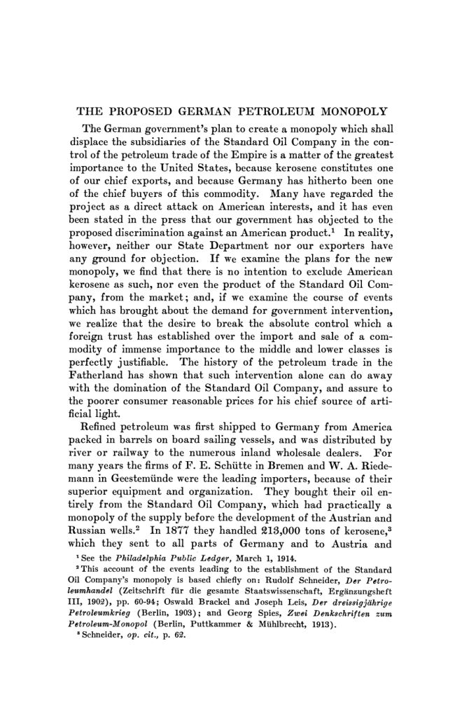

Munro, 1914: a Alemanha contra a Standard Oil
Leitura: 8 min
A Standard Oil dominava o querosene alemão desde 1896. Munro descreve como o domínio foi construído e por que o monopólio regulado proposto pelo governo dependia de uma oferta independente que talvez não existisse.


Em 1877, duas firmas de Bremen, a de F. E. Schütte e a de W. A. Riedemann em Geestemünde, importaram 213.000 toneladas de querosene americano, que chegava em barris a bordo de veleiros. Perdendo terreno para os importadores de Hamburgo, que tinham o Elba para levar o óleo ao interior, elas adaptaram um veleiro com tanques para receber o petróleo bombeado, sem barris. Ninguém havia tentado atravessar o oceano assim. A experiência deu certo, e as firmas encomendaram quinze navios-tanque.
É com essa história que Dana G. Munro abre seu estudo sobre o projeto alemão de monopólio do petróleo iluminante. O tema importava aos Estados Unidos porque o querosene era uma das principais exportações americanas e a Alemanha, uma das maiores compradoras. Munro sustenta que o projeto não discriminava o produto americano e que a intervenção do governo alemão era compreensível.
Como a Standard Oil conquistou o mercado alemão?
A inovação de Bremen foi copiada. Firmas do Elba e do Reno passaram a usar navios-tanque oceânicos e fluviais e vagões-tanque. Em 1890–1891, dois importadores do Reno, Philip Poth, em Mannheim, e Rieth, em Mannheim e Antuérpia, tomaram a liderança. Poth comprava de produtores americanos independentes; Rieth, de Baku. Para conter a perda, a Standard Oil decidiu assumir a importação.
Em 22 de fevereiro de 1890, fundou a Deutsch-Amerikanische Petroleum-Gesellschaft, a D. A. P. G., com metade das ações com direito a voto; o restante ficou com antigos correspondentes em Bremen, Hamburgo, Königsberg e Stettin. Seguiu-se uma guerra de preços na região do Reno, enquanto a empresa lucrava no resto do país. Em cada centro de distribuição, um atacadista contratado, garantido contra perdas, devia vender abaixo dos clientes dos independentes.
As importações russas de Rieth praticamente cessaram em 1893, e em 1896 os dois independentes se renderam. A Standard reorganizou as firmas vencidas como filiais nominalmente concorrentes, que na prática seguiam as linhas dos diretores americanos. Em 1897, tentou incluir nos contratos com atacadistas uma cláusula secreta de exclusividade e de divisão de territórios; a reação pública a fez desistir, mas a divisão foi obtida com uma cláusula que só permitia despachar o óleo em barris, caros demais para longas distâncias.
Que concorrência sobreviveu?
Por volta de 1897, uma importadora de óleo de Baku passou a vender bem abaixo da D. A. P. G. Por volta de 1900, recuou de repente. A explicação, segundo Munro, parece ter sido um acordo entre os interesses Rockefeller e a firma Nobel, principal produtora russa, que dividiu os mercados mundiais e reconheceu a Alemanha como domínio da Standard; o acordo foi rompido em 1905.
A tentativa mais séria veio do Deutsche Bank, que em 1901 comprou a maioria da Steaua Romana, a maior produtora romena, e criou distribuidoras em Hamburgo e Berlim. As perdas foram tais que as empresas do banco aceitaram, em 1907, uma cota de 20% do mercado alemão sob controle da D. A. P. G. em preços e condições de venda. Em 1904, a Standard comprou todas as ações da D. A. P. G. e pôs diretores americanos no lugar dos alemães.
Munro reconhece que a Standard não abusou da posição. Reduziu muito o custo de colocar o querosene no mercado, primeiro com caminhões-tanque que abasteciam diretamente os varejistas, depois com a entrega em latas de três, cinco e dez litros ao consumidor. Os preços caíram, exceto por uma alta nos primeiros meses de 1912. O temor era o futuro: com toda a concorrência eliminada, o óleo, ainda mais barato que o gás e a eletricidade, poderia subir sem grande perda de vendas, sobretudo no campo.
Como seria o monopólio proposto?
Por resolução de 15 de março de 1911, o Reichstag pediu ao governo um estudo. O relatório, de novembro de 1912, considerou três caminhos: tarifas que favorecessem o refino nacional de óleo bruto, rejeitadas porque o refinador dependeria do truste para o óleo bruto; um monopólio estatal, rejeitado pelo aumento do funcionalismo e pelo risco do negócio; e um monopólio privado sob controle oficial, que foi o escolhido.
O projeto previa uma empresa com monopólio da importação e do atacado por trinta anos, capital de 60 milhões de marcos, um consórcio de bancos com ao menos metade dos votos e ações depositadas no Reichsbank. Um comissário nomeado pelo chanceler poderia vetar decisões, e a eleição dos dirigentes dependeria de sua confirmação. A empresa assumiria as instalações existentes, indenizando as firmas e funcionários desalojados.
A receita do Império se destinaria a fins sociais, como pensões de velhice e seguro operário. A comissão do Reichstag alterou o projeto para reduzir a influência do Deutsche Bank, mas a lei de armamentos ocupou a sessão, e, quando Munro escreve, o texto ainda estava em comissão.
Haveria óleo sem a Standard?
Os opositores tinham três argumentos: os bancos ganhariam demais, o monopólio dependeria da Standard para se abastecer e o consumidor pagaria mais por óleo pior. Munro descarta o primeiro, pela fiscalização e pela opinião pública, e leva a sério o segundo. O governo dizia ter acordos preliminares para obter 300.000 toneladas da Rússia, da Áustria e da Romênia e 450.000 toneladas de independentes americanos.
Os números de Munro mostram a dificuldade. A Alemanha importou 755.199 toneladas em 1911. A Rússia exportou 475.000 toneladas de querosene, mais da metade para a Turquia, o Egito e outros países do mar Negro, e seu óleo bruto rende 30% a 35% de querosene, contra 60% a 75% do óleo da Pensilvânia e de Ohio. A Romênia exportou 323.012 toneladas, menos de 25.000 para a Alemanha. A Galícia produziu 540.000 toneladas, quase tudo consumido na monarquia austro-húngara.
A conclusão é que o monopólio dependeria em grande medida do querosene americano, e quase todas as refinarias americanas estavam nas mãos da Standard ou dependiam de seus oleodutos. Os independentes teriam preços algo mais altos, por não contarem com o sistema de transporte do truste.
Se dependesse da Standard, o monopólio se tornaria, “para todos os efeitos, apenas um agente de vendas do truste”. (“to all intents and purposes merely a selling agent of the trust”)
Quanto ao preço, a referência de 20 pfennigs no reservatório implicaria cerca de 23 pfennigs ao consumidor, acima do preço vigente na maioria das cidades; a D. A. P. G. informava ter entregue o óleo aos varejistas em 1911 a 16,16 pfennigs, em média. O governo estimava vender aos lojistas a cerca de 19 pfennigs, cálculo que Munro chama de pouco mais que um palpite. O consumo de querosene, além disso, vinha caindo.
Mesmo assim, Munro termina com simpatia pelo projeto. Se desse certo, a Standard perderia seu melhor mercado externo, outros países poderiam seguir o exemplo, e os produtores independentes da América, da Rússia e da Romênia ganhariam acesso a mercados dos quais a concorrência desleal os excluíra.
Na minha leitura
Na minha leitura, o artigo é um estudo de caso sobre os limites da regulação de um monopólio pelo lado da demanda. O governo alemão podia controlar a importação, o atacado e o preço, mas não a oferta mundial de querosene, e o plano inteiro dependia de que existisse fora do truste óleo suficiente a preço razoável. Munro mostra, com números, que essa premissa era frágil.
O caso também ilustra uma ambiguidade que Munro deixa clara. A Standard havia barateado a distribuição eliminando intermediários, e os preços tinham caído sob seu domínio. O argumento contra ela não era o preço presente, mas o risco futuro e a dependência estratégica de um fornecedor estrangeiro. Pesar esse risco contra a eficiência demonstrada é o dilema de toda política antitruste.
Glossário
- Querosene
- derivado do petróleo usado em lâmpadas, principal produto do comércio de petróleo antes do automóvel.
- D. A. P. G.
- Deutsch-Amerikanische Petroleum-Gesellschaft, subsidiária alemã da Standard Oil fundada em 1890.
- Navio-tanque
- navio com tanques para o transporte do óleo a granel, sem barris.
- Guerra de preços
- venda abaixo do custo em uma região para eliminar concorrentes.
- Monopólio regulado
- empresa com exclusividade legal sujeita a controle público de preços e lucros.
- Pfennig
- centésima parte do marco alemão.
- Steaua Romana
- principal produtora romena de petróleo, controlada pelo Deutsche Bank desde 1901.
Fontes
- The Proposed German Petroleum Monopoly — Dana G. Munro (pp. 315–331). JSTOR · Internet Archive (PDF)
- Edição completa, com os demais artigos: Nº 130 do Arquivo.
Documento em domínio público (EUA, publicado antes de 1931), via JSTOR Early Journal Content e Internet Archive. Resumo e comentário do autor deste site, sem afiliação com a American Economic Association. Encontrou um erro? Escreva: a correção é publicada no próprio texto, com data.
↑ Nº 130 · Junho de 1914: uma greve geral e o monopólio alemão do petróleo Brown, 1914: o custo de produção ainda explica o valor do capital? →